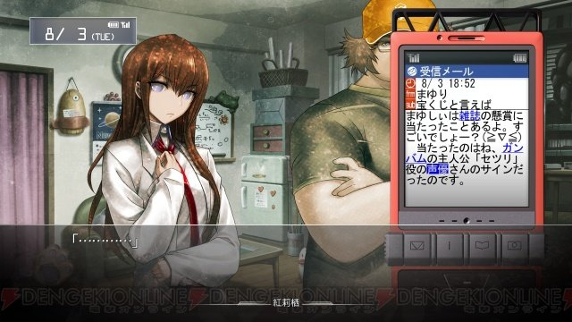

Далее вы увидите список аниме и визуальных новелл, которые я считаю заслуживающих просмотра или поверхностного ознакомления
«Евангелион»
«Евангелион», или сокращённо «Ева», — аниме-сериал в жанре «меха», от студии Gainax за режиссурой Хидэаки Анно выходивший с 4 октября 1995 по 27 марта 1996 года.
Среди аниме нового типа первое место по праву занял один из лучших сериалов в истории аниме – сериал Хидэаки Анно и студии «ГАЙНАКС» «Евангелион нового поколения» («Синсэйки Евангелион», 1995-1996), шедевр жанра «меха-сэнтай».
Фактически, правда, жанр этого сериала определить достаточно трудно, а описать его в нескольких строчках – просто невозможно.
История жизни Синдзи Икари и других пилотов биомеханических «гигантских роботов» серии «Евангелион», не вполне понимающих, зачем они сражаются с таинственными Ангелами, может быть понята во множестве смыслов, каждый из которых имеет право на существование.
Для кого-то это – блестящий военно-тактический сериал, для кого-то – исповедь заблудшей души, для кого-то – предупреждение науке, слишком близко подошедшей к тайнам жизни.
Сериал наполнен цитатами из священных текстов всего мира и огромных количеством неразрешимых сюжетных загадок.
Тем не менее, благодаря правильной маркетинговой политике, он нашел своего зрителя и имел колоссальный успех.
Третий Ангел вострубил, и упала с неба большая звезда, горящая подобно светильнику, и пала на третью часть рек и на источники вод.
Имя сей звезде "полынь"; и третья часть вод сделалась полынью, и многие из людей умерли от вод, потому что они стали горьки.
«Steins;Gate»
Steins;Gate (яп. シュタインズ ゲート Сютайндзу Гэ:то, «Врата;Штейна») — японский визуальный роман, разработанный компаниями 5pb. и Nitroplus. Является второй игрой в серии Science Adventure. История разворачивается спустя год после событий, описанных в Chaos;Head, и повествует о группе студентов, которые по мере продвижения сюжета открывают способ путешествия во времени. Игра имеет нелинейное повествование, делящееся на ветви.
Отличительной особенностью серии стало особое взаимодействие с телефоном, которое можно произвести на протяжении практически всей игры, влияющее на прохождение и получаемую концовку.
